correlation heatmap
应用场景
可以同时展示多个变量之间的相关关系，比如，同时展示10个基因直接的相关系数
correlation plot
library(ggcorrplot)
#准备数据
#构建相关表达矩阵
get_lower_tri<-function(cormat){
cormat[upper.tri(cormat)] <- NA
return(cormat)
}
# Get upper triangle of the correlation matrix
get_upper_tri <- function(cormat){
cormat[lower.tri(cormat)]<- NA
return(cormat)
}
#Reorder the correlation matrix
reorder_cormat <- function(cormat){
# Use correlation between variables as distance
dd <- as.dist((1-cormat)/2)
hc <- hclust(dd)
cormat <-cormat[hc$order, hc$order]
}
#利用前面两节中差异表达数据，选取10个基因的数据做展示
rt_cor <- t(rt_ht[20:30, ])
cormat <- round(cor(rt_cor), 2)
cormat数据结构如下
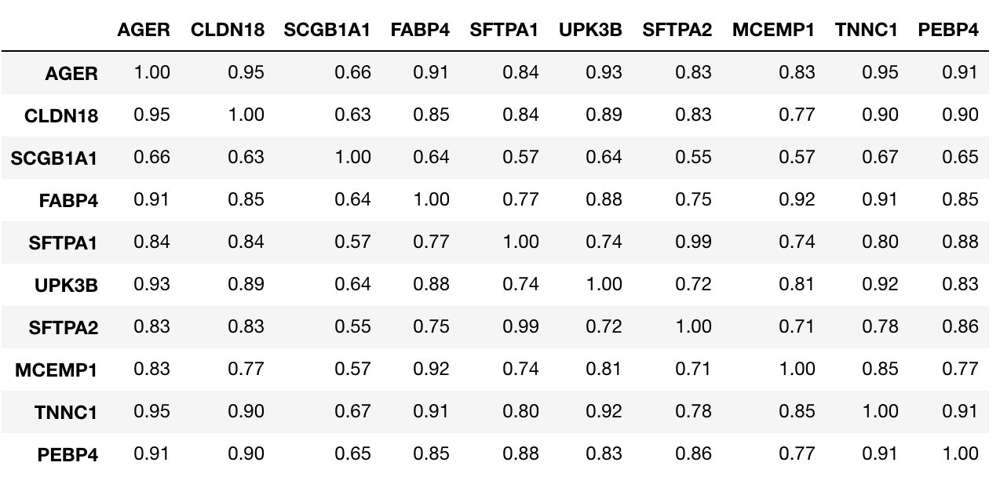
svg(file = 'heatmap9.svg', width = 10, height = 6)
ggcorrplot(cormat)
dev.off()
#可以改变下颜色
svg(file = 'heatmap10.svg', width = 10, height = 6)
ggcorrplot(cormat, hc.order = TRUE,
outline.col = "white",
colors = c("#6D9EC1", "white", "#E46726"))
dev.off()
#可以按照相关系数排个序
svg(file = 'heatmap11.svg', width = 10, height = 6)
ggcorrplot(cormat, hc.order = TRUE, outline.col = "white")
dev.off()
#可以展示upper或者lower
#设置type参数
svg(file = 'heatmap12.svg', width = 10, height = 6)
ggcorrplot(cormat, hc.order = TRUE, outline.col = "white", type = "lower")
dev.off()
#可以加上相关系数的值
# lab = TRUE
svg(file = 'heatmap12.svg', width = 10, height = 6)
ggcorrplot(cormat, hc.order = TRUE, type = "lower", lab = TRUE)
dev.off()
#也可以换种展示方式
# method = "circle"
svg(file = 'heatmap14.svg', width = 10, height = 6)
ggcorrplot(cormat, hc.order = TRUE, type = "lower",
method = "circle")
dev.off()
 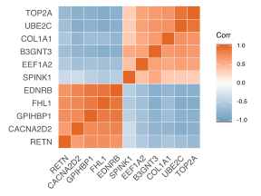
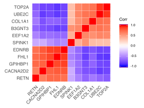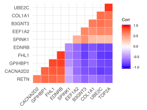
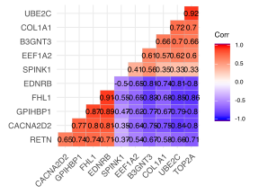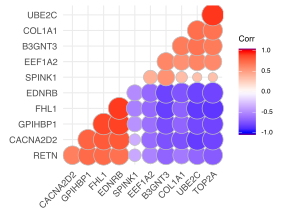
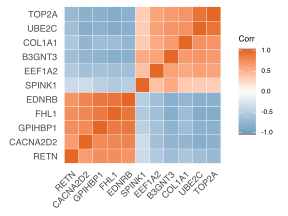
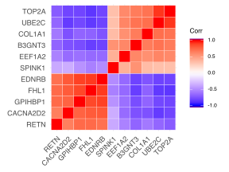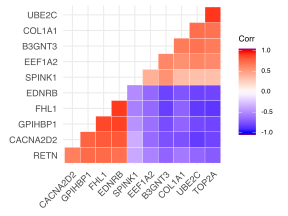
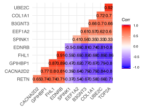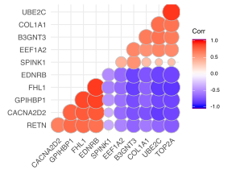